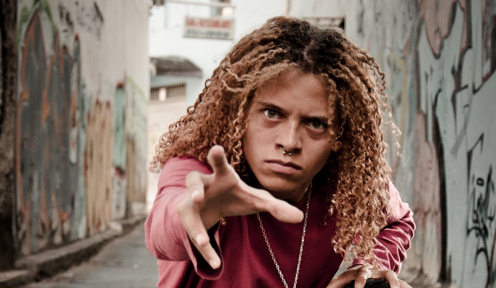

Goiânia 21 de Maio de 2023
Quem sou eu?

Nascido em 27/05/1988, na Região Administrativa I de Brasília, Distrito Federal, Brasil. Filho de Zenilda Maria dos Reis, servidora pública aposentada da educação.
De 2009~2014 foi vocalista da banda Skulls On Fire, onde conquistou os prêmios de melhor banda de garagem do Estado de Goiás e 19º em todos os estilos e de 5º melhor vocalista da modalidade Trash Metal, no Estado de Goiás. Participou de inúmeros eventos como o renomado Tattoo Rock Fest, Vaca Amarela, Under Metal, Wacken Open-Air, dentre outros.
Formou-se em Direito em Fevereiro de 2016, pela Pontifícia Universidade Católica de Goiás(PUC-GO), no curso de Direito, porém, não teve interesse em prosseguir na profissão de advogado, não realizando portanto o exame de ordem dos advogados(OAB).
Em 2016 conquistou a medalha de bronze no Campeonato Mundial de Kickboxing, na modalidade Kick-light, se graduando logo em seguida para a Faixa-Marrom de Kickboxing.
Ainda em 09/06/2016, também se graduou como faixa-azul no Jiu-Jitsu, da Equipe Gnomo Team, do sensei Marquim Gnomo, faixa-preta do tri-campeão mundial de Jiu-Jitsu Fernando Boi.
Em 2018 Se graduou como Instrutor de Muay-Thai.
Em 07/02/2021 foi iniciado ao culto de Candomblé, como um dofonotinho de Oxalufan e Oxóssi, visto que é um Ori-meji.
Em 2022 foi eleito como Diretor Secretário-Geral na Federação de Umbanda e Candomblé do Estado de Goiás (FUCEG).
No mesmo ano, também foi eleito como Diretor de Esportes da Associação Projeto Social Anjo Da Guarda (APSAG).
Se formou no curso de Costureiro Sob Medida, no SENAI-GO em 2020, não podendo dar continuidade na nova carreira em decorrência de impedimentos financeiros decorrentes da pandemia.
Em 2022 buscou uma nova carreira que melhor atendesse aos seus anseios de profissionais e mais alinhada com seu perfil analítico e, após meses de estudo, no ano de 2023, iniciou seu caminho na área de programação, percorrendo o caminho do dev, com metodologia, planejamento e muita dedicação.
O ano de 2023 foi bastante desafiador, visto que Klaus Reis, terminou o ano anterior com fortes crises de asma, tendo sua condição piorada no início do referido ano, evoluindo o quadro de gripe e crise asmática, para uma tuberculose, que só foi identificada no final do mês de março, já em estado avançado da doença, causando-lho grave debilidade e comprometendo cerca de 40% do seu pulmão.